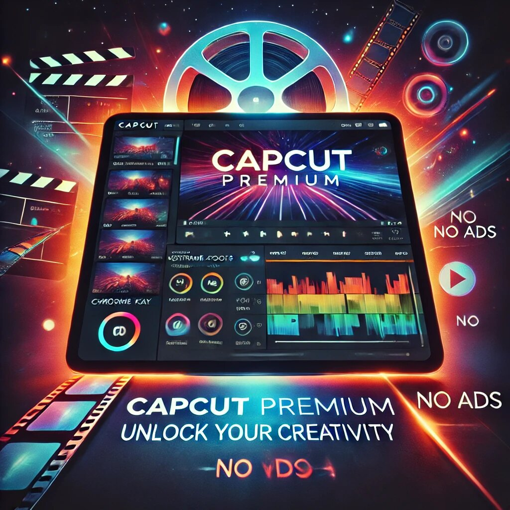

In the world of video editing, finding the right tool can feel like searching for a needle in a haystack. But what if I told you there’s a platform that combines simplicity, power, and affordability? Enter CapCut Premium, the game-changer for content creators, social media enthusiasts, and anyone who loves telling stories through videos. Whether you’re a beginner or a seasoned editor, CapCut premium has something for everyone. Let’s dive into the world of CapCut Premium and explore why it’s the ultimate choice for video editing.
CapCut is a free video editing app developed by ByteDance, the same company behind TikTok. It’s already a favorite among millions for its user-friendly interface and robust features. But CapCut Premium takes things to the next level. It’s the upgraded version of the app, offering exclusive tools, advanced effects, and an ad-free experience. Think of it as the VIP pass to the world of video editing.
Now, let’s talk about why CapCut Premium is worth every penny (and maybe even a few extra snacks you’ll skip to afford it).
Let’s face it: ads can be annoying. Just when you’re in the zone, editing your masterpiece, an ad pops up and ruins your flow. With latest capcut mod apk version, you can kiss those interruptions goodbye. The ad-free experience ensures that your creativity isn’t disrupted, allowing you to focus on what really matters—creating amazing content.
CapCut Premium is like a treasure chest of effects and filters. From cinematic transitions to trendy overlays, the premium version offers exclusive tools that make your videos stand out. Want to add a vintage vibe or a futuristic glow? CapCut Premium has got you covered. These effects are designed to elevate your content, making it look professional without requiring hours of editing.
If you’ve ever felt limited by basic editing tools, CapCut Premium will feel like a breath of fresh air. It offers advanced features like keyframe animation, chroma key (green screen), and speed ramping. These tools give you complete control over your videos, allowing you to create dynamic and engaging content.
For example, with keyframe animation, you can animate text, images, or videos to move smoothly across the screen. It’s like having a mini animation studio in your pocket!
Nothing ruins a great video like poor quality. CapCut Premium ensures that your hard work shines by offering high-quality export options. You can export videos in up to 4K resolution, ensuring crisp and clear visuals. Whether you’re uploading to YouTube, Instagram, or TikTok, your videos will look stunning on any platform.
Ever lost a project because your phone ran out of storage? With CapCut Premium, you can say goodbye to that nightmare. The premium version offers cloud storage, allowing you to save your projects securely and access them from any device. Plus, it makes collaboration a breeze. You can share projects with friends or team members, making it perfect for group projects or co-creating content.
Music can make or break a video. CapCut Premium comes with a library of exclusive music tracks and sound effects that you won’t find in the free version. From upbeat tunes to emotional melodies, there’s something for every mood and theme. And the best part? You don’t have to worry about copyright issues. All the music is royalty-free, so you can use it freely in your videos.
One of the biggest strengths of CapCut is its simplicity. The interface is clean, intuitive, and easy to navigate, even for beginners. CapCut Premium retains this user-friendly design while adding more advanced features. You don’t need to be a tech wizard to create professional-looking videos. Just drag, drop, and edit—it’s that simple!
CapCut Premium is constantly evolving. The developers regularly release updates with new features, effects, and tools. This means you’ll always have access to the latest trends and technologies in video editing. It’s like getting a new toy every few months—except this toy helps you create amazing content.
Here’s the cherry on top: CapCut Premium is incredibly affordable. Compared to other premium editing tools, it offers exceptional value for money. Whether you choose a monthly or yearly subscription, the cost is a small price to pay for the features and benefits you get. Plus, think of all the time and effort you’ll save by using such a powerful tool.
If you’re a social media creator, CapCut Premium is your best friend. It’s designed to help you create content that stands out on platforms like TikTok, Instagram, and YouTube. With features like auto-captioning, aspect ratio adjustments, and templates tailored for social media, you can create posts that grab attention and engage your audience.
Not sure where to start? CapCut Premium offers a wide range of templates for different occasions and themes. Whether you’re creating a birthday montage, a travel vlog, or a product promo, there’s a template to suit your needs. These templates are fully customizable, so you can add your personal touch while saving time.
CapCut Premium works seamlessly across multiple devices. Whether you’re editing on your phone, tablet, or computer, you can pick up where you left off. This flexibility is a game-changer for creators who are always on the go.
CapCut has a thriving community of users who share tips, tricks, and inspiration. With CapCut Premium, you also get access to premium support, ensuring that any issues or questions are resolved quickly. It’s like having a team of experts in your corner, ready to help you succeed.
At its core, CapCut Premium is all about empowering your creativity. It removes the technical barriers of video editing, allowing you to focus on telling your story. Whether you’re creating a heartfelt tribute, a funny meme, or a professional presentation, CapCut Premium gives you the tools to bring your vision to life.
Let’s not forget the fun factor. Editing videos with CapCut Premium is enjoyable, thanks to its intuitive design and playful features. You can experiment with effects, try out new styles, and let your imagination run wild. It’s like playing a game where the prize is a stunning video.
In a world where content is king, having the right tools can make all the difference. CapCut Premium offers a perfect blend of simplicity, power, and affordability, making it the ultimate choice for video editing. Whether you’re a casual user or a professional creator, it has everything you need to take your videos to the next level.
So, if you’re ready to unlock your creativity and create videos that wow your audience, give CapCut Premium a try. Trust me, your future self (and your followers) will thank you.
CapCut Premium isn’t just a tool—it’s a gateway to endless possibilities. With its advanced features, user-friendly design, and affordable pricing, it’s no wonder that it’s becoming the go-to choice for video editors worldwide. Whether you’re editing your first video or your hundredth, CapCut Premium makes the process fun, easy, and rewarding.
So, what are you waiting for? Dive into the world of CapCut Premium and start creating videos that shine. After all, the world needs your story—and CapCut Premium is here to help you tell it.